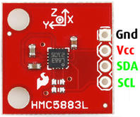

L'HMC5883L è una bussola digitale a 3 assi dotata di interfaccia di comunicazione I2C. Non è incluso il regolatore di tensione per cui è necessario alimentare il sensore con una tensione continua tra 2.16 e 3.6V. E' incluso un condensatore di filtraggio sulla linea di alimentazione. Non è necessario usare resistenze di pull-up sul bus I2C perché sono già incluse nella scheda.

#include <Wire.h>
#include <HMC58X3.h>
HMC58X3 magn;
void setup(void) {
Serial.begin(9600);
Wire.begin();
// no delay needed as we have already a delay(5) in HMC5843::init()
magn.init(false); // Dont set mode yet, we'll do that later on.
// Calibrate HMC using self test, not recommended to change the gain after calibration.
magn.calibrate(1, 32); // Use gain 1=default, valid 0-7, 7 not recommended.
// Single mode conversion was used in calibration, now set continuous mode
magn.setMode(0);
}
void loop() {
int ix,iy,iz;
float fx,fy,fz;
delay(10);
// Get values, as ints and floats.
magn.getValues(&ix,&iy,&iz);
magn.getValues(&fx,&fy,&fz);
// also available HMC5843::getValues(float *xyz) you can pass to it an array of 3 floats
// Print int values
Serial.print("Ints x:");
Serial.print(ix);
Serial.print(",");
Serial.print(iy);
Serial.print(",");
Serial.print(iz);
Serial.print(",");
// Print float values
Serial.print(" Floats x:");
Serial.print(fx);
Serial.print(" y:");
Serial.print(fy);
Serial.print(" z:");
Serial.print(fz);
Serial.print(" Heading: ");
float heading = atan2(fy, fx);
if(heading < 0) {
heading += 2 * M_PI;
}
Serial.println(heading * 180/M_PI);
// x and y axis are swapped above with respect to the above paper as our Z axis points to the sky while in the paper it points to the bottom
}